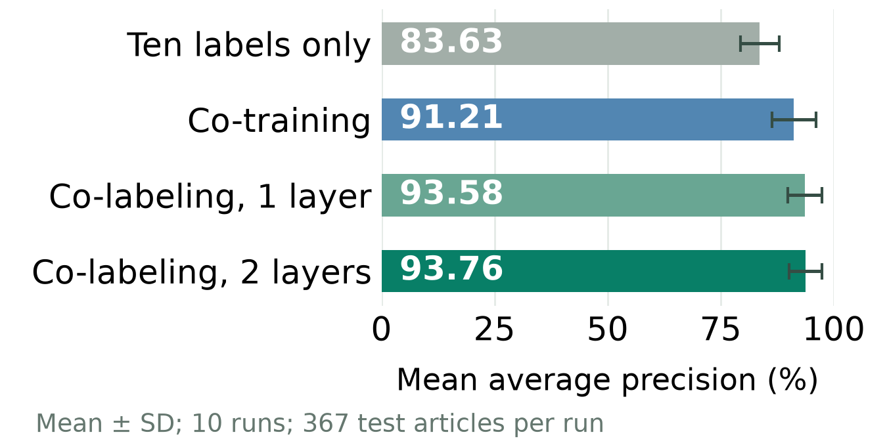

A REPLAY OF REAL TRAINING
Watch the readers learn
Follow one round slowly, then watch the remaining rounds. Predictions, label lists and learned weights come from the implementation.
0:00 / 1:30
Playback is slowed down for explanation. The browser and exported video use the same animation. Space plays or pauses; Left and Right move between scenes.
Our measured test results

MAP measures how well relevant articles rank near the top. Error bars show variation between ten runs, with 367 test articles per run.
These are our independent implementation's measurements. The two co-labeling versions have similar mean scores.